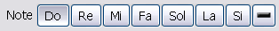
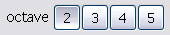
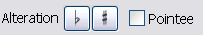
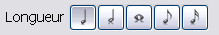

Pour configurer les note, vous devez utiliser la barre de configuration située dans la partie Mélodie du chant.
Vous pouvez ainsi choisir quelle note vous voulez jouer en cliquant sur un des boutton de la barre d'outil 
Vous pouvez aussi choisir l'octave de votre note en cliquant sur l'un des boutton de la barre d'outil 
Pour modifier l'altération de votre note, vous pouvez utiliser un des boutton de la barre d'outil 
Vous pouvez donc choisir de créer une note pointée ou non et d'appliquer un bémol ou un dièse.
Enfin, vous pouvez choisir la longueur de votre note à l'aide de la barre d'outil 